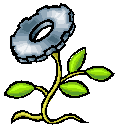
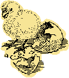

Se encontraba el Sol muy acobardado y ni por más que la Luna en un eclipse se le acercara y le dijera que lo amaba, no pudo quitarle el seño de preocupación.
-¿Te siento incómodo, que te pasa? Le dijo la Luna
- Es que me siento mal, porque no tengo semillas como los demás, el hombre, la mujer, los animales y las plantas, las tienen, y yo, siendo toda una Estrella Media, no las tengo!
-¡Pero tú das vida con tus rayos de luz, que están hechos de fotoncitos, son semillas transparentes, otra cosa es que no te lo reconozcan!
- Si, pero me gustaría que mi amiga la Tierra, tenga también mi semilla, en sus entrañas como las que dan las flores, cuando las aves riegan el polen, para que nazcan más flores, además quisiera que mi semilla dejara huella eterna y que el hombre la disfrutara!
 
- Definitivamente eres bien ambicioso. ! Ensaya con tus rayos!
-¡Tienes razón voy a intentarlo! Y veré que sale y lo haré en la Madre Tierra donde todo nace.
Al día siguiente se vió al Sol, trabajando con sus rayos y dale que te dale, hasta que se puso a sudar y unas gotas de sudor cayeron en la tierra y el Sol dijo:
!! Viva, lo logré, sudar y esforzarse, vale la pena!!
Y llegaron los amigos, el Agua lo sintió primero, la tierra se alegró, de sus entrañas brotaban las gotas de sudor del Sol, la Luna se admiró, hasta las gotitas del Sol, resplandecían de noche.
Y todos comentaban; se parece a sus rayos, tienen su mismo color, es la semilla más notoria, luego felicitaron al Sol por su esfuerzo y por su idea colosal!
Desde entonces la Tierra, el Agua, las Rocas y las plantas cubrieron y acunaron el sudor del astro Sol. El hombre lo llamó oro y con trabajo y sudor lo disfrutó